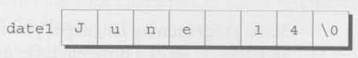
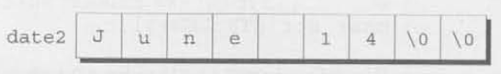
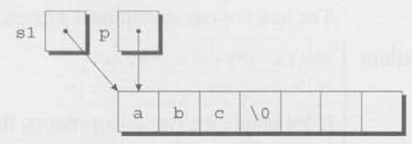
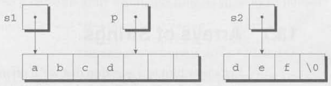

It’s difficult to extract sense from strings, but they’re the only communication coin we can count on.
Although we’ve used char variables and arrays of
char values in previous chapters, we still lack any
convenient way to process a series of characters (a string, in
C terminology). We’ll remedy that defect in this chapter, which covers
both string constants (or literals, as they’re called
in the C standard) and string variables, which can change
during the execution of a program.
Section 13.1 explains the rules that govern string literals, including the rules for embedding escape sequences in string literals and for breaking long string literals. Section 13.2 then shows how to declare string variables, which are simply arrays of characters in which a special character—the null character—marks the end of a string. Section 13.3 describes ways to read and write strings. Section 13.4 shows how to write functions that process strings, and Section 13.5 covers some of the string-handling functions in the C library. Section 13.6 presents idioms that are often used when working with strings. Finally, Section 13.7 describes how to set up arrays whose elements are pointers to strings of different lengths. This section also explains how C uses such an array to supply command-line information to programs.
A string literal is a sequence of characters enclosed within double quotes:
"When you come to a fork in the road, take it."We first encountered string literals in Chapter 2: they often appear
as format strings in calls of printf and
scanf.
String literals may contain the same escape sequences as character
constants. We’ve used character escapes in printf and
scanf format strings for some time. For example, we’ve seen
that each \n character in the string
"Candy\nIs dandy\nBut liquor\nIs quicker.\n --Ogden Nash\n"causes the cursor to advance to the next line:
Candy
Is dandy
But liquor
Is quicker.
--Ogden NashAlthough octal and hexadecimal escapes are also legal in string literals, they’re not as common as character escapes.
Be careful when using octal and hexadecimal escape sequences in
string literals. An octal escape ends after three digits or with the
first non-octal character. For example, the string "\1234"
contains two characters (\123 and 4), and the
string "\189" contains three characters (\1,
8, and 9). A hexadecimal escape, on the other
hand, isn’t limited to three digits; it doesn’t end until the first
non-hex character. Consider what happens if a string contains the escape
\xfc, which represents the character ü in the
Latin character set, a common extension of ASCII. The string
"Z\xfcrich" (“Zürich”) has six characters (Z,
\xfe, r, i, c, and
h), but the string "\xfcber" (a failed attempt
at “über”) has only two (\xfcbe and r). Most
compilers will object to the latter string, since hex escapes are
usually limited to the range \x0-\xff.
If we find that a string literal is too long to fit conveniently on a
single line, C allows us to continue it on the next line, provided that
we end the first line with a backslash character (\). No
other characters may follow \ on the same line, other than
the (invisible) new-line character at the end:
printf("When you come to a fork in the road, take it. \
--Yogi Berra");In general, the \ character can be used to join two or
more lines of a program into a single line (a process that the C
standard refers to as “splicing”). We’ll see more examples of splicing
in Section 14.3.
The \ technique has one drawback: the string must
continue at the beginning of the next line, thereby wrecking the
program’s indented structure. There’s a better way to deal with long
string literals, thanks to the following rule: when two or more string
literals are adjacent (separated only by white space), the compiler will
join them into a single string. This rule allows us to split a string
literal over two or more lines:
printf ("when you come to a fork in the road, take it. "
"--Yogi Berra");We’ve used string literals often in calls of printf and
scanf. But when we call printf and supply a
string literal as an argument, what are we actually passing? To answer
this question, we need to know how string literals are stored.
In essence, C treats string literals as character arrays. When a C
compiler encounters a string literal of length n in a
program, it sets aside n + 1 bytes of memory for the
string. This area of memory will contain the characters in the string,
plus one extra character—the null character—to mark the end of the
string. The null character is a byte whose bits are all zero, so it’s
represented by the \0 escape sequence.
Don’t confuse the null character ('\0') with the zero
character ('0'). The null character has the code
0; the zero character has a different code (48
in ASCII).
For example, the string literal "abc" is stored as an
array of four characters (a, b,
c, and \0):
String literals may be empty; the string "" is stored as
a single null character:

Since a string literal is stored as an array, the compiler treats it
as a pointer of type char *. Both printf and
scanf, for example, expect a value of type
char * as their first argument. Consider the following
example:
printf("abc") ;When printf is called, it’s passed the address of
"abc" (a pointer to where the letter a is
stored in memory).
In general, we can use a string literal wherever C allows a
char * pointer. For example, a string literal can appear on
the right side of an assignment:
char *p;
p = "abc";This assignment doesn’t copy the characters in "abc"; it
merely makes p point to the first character of the
string.
C allows pointers to he subscripted, so we can subscript string literals:
char ch;
ch = "abc"[1];The new value of ch will be the letter b.
The other possible subscripts are 0 (which would select the letter
a), 2 (the letter c), and 3 (the null
character). This property of string literals isn’t used that much, but
occasionally it’s handy. Consider the following function, which converts
a number between 0 and 15 into a character that represents the
equivalent hex digit:
char digit_to_hex_char(int digit)
{
return "0123456789ABCDEF"[digit];
}
Attempting to modify a string literal causes undefined behavior:
char *p = "abc";
*p = 'd'; /*** WRONG ***/
A program that tries to change a string literal may crash or behave erratically.
A string literal containing a single character isn’t the same as a
character constant. The string literal "a" is represented
by a pointer to a memory location that contains the character
a (followed by a null character). The character constant
'a' is represented by an integer (the numerical code for
the character).
Don’t ever use a character when a string is required (or vice versa). The call
printf("\n") ;is legal, because printf expects a pointer as its first
argument. The following call isn’t legal, however:
printf('\n'); /*** WRONG ***/Some programming languages provide a special string type
for declaring string variables. C takes a different tack: any
one-dimensional array of characters can be used to store a string, with
the understanding that the string is terminated by a null character.
This approach is simple. but has significant difficulties. It’s
sometimes hard to tell whether an array of characters is being used as a
string. If we write our own string-handling functions, we’ve got to be
careful that they deal properly with the null character. Also, there’s
no faster way to determine the length of a string than a
character-by-character search for the null character.
Let’s say that we need a variable capable of storing a string of up to 80 characters. Since the string will need a null character at the end, we’ll declare the variable to be an array of 81 characters:
idiom
#define STR_LEN 80
...
char str[STR_LEN + 1] ;We defined STR_LEN to be 80 rather than 81, thus
emphasizing the fact that str can store strings of no more
than 80 characters, and then added 1 to STR_LEN in the
declaration of str. This is a common practice among C
programmers.
When declaring an array of characters that will be used to hold a string, always make the array one character longer than the string, because of the C convention that every string is terminated by a null character. Failing to leave room for the null character may cause unpredictable results when the program is executed, since functions in the C library assume that strings are null-terminated.
Declaring a character array to have length STR_LEN + 1
doesn’t mean that it will always contain a string of
STR_LEN characters. The length of a string depends on the
position of the terminating null character, not on the length of the
array in which the string is stored. An array of
STR_LEN + 1 characters can hold strings of various lengths,
ranging from the empty string to strings of length
STR_LEN.
A string variable can be initialized at the same time it’s declared:
char date1[8] = "June 14";The compiler will put the characters from "June 14" in
the date1 array, then add a null character so that
date1 can be used as a string, Here’s what
date1 will look like:

Although "June 14" appears to be a string literal, it’s
not. Instead, C views it as an abbreviation for an array initializer. In
fact, we could have written
char date1[8] = {'J', 'u', 'n', 'e', ' ', '1', '4', '\0'};I think you’ll agree that the original version is easier to read.
What if the initializer is too short to fill the string variable? In that case, the compiler adds extra null characters. Thus, after the declaration
char date2[9] = "June 14";date2 will have the following appearance:

This behavior is consistent with C’s treatment of array initializers
in general. When an array initializer is shorter than the array itself,
the remaining elements are initialized to zero. By initializing the
leftover elements of a character array to \0, the compiler
is following the same rule.
What if the initializer is longer than the string variable? That’s illegal for strings, just as it’s illegal for other arrays. However, C does allow the initializer (not counting the null character) to have exactly the same length as the variable;
char date3[7] = "June 14";There’s no room for the null character, so the compiler makes no attempt to store one:

If you’re planning to initialize a character array to contain a string, be sure that the length of the array is longer than the length of the initializer. Otherwise, the compiler will quietly omit the null character, making the array unusable as a string.
The declaration of a string variable may omit its length, in which case the compiler computes it:
char date4[] = "June 14";The compiler sets aside eight characters for date4,
enough to store the characters in "June 14" plus a null
character. (The fact that the length of date4 isn’t
specified doesn’t mean that the array’s length can be changed later.
Once the program is compiled, the length of date4 is fixed
at eight.) Omitting the length of a string variable is especially useful
if the initializer is long, since computing the length by hand is
error-prone.
Let’s compare the declaration
char date[] = "June 14";which declares date to be an array, with the
similar-looking
char *date = "June 14";which declares date to be a pointer. Thanks to the close
relationship between arrays and pointers, we can use either version of
date as a stiing. In particular, any function expecting to
be passed a character array or character pointer will accept either
version of date as an argument.
However, we must be careful not to make the mistake of thinking that
the two versions of date are interchangeable. There are
significant differences between the two:
date can
be modified, like the elements of any array. In the pointer version,
date points to a string literal, and we saw in Section 13.1
that string literals shouldn’t be modified.date is an array name. In the
pointer version, date is a variable that can be made to
point to other strings during program execution.If we need a string that can be modified, it’s our responsibility to set up an array of characters in which to store the string: declaring a pointer variable isn’t enough. The declaration
char *p;causes the compiler to set aside enough memory for a pointer
variable; unfortunately. it doesn’t allocate space for a string. (And
how could it? We haven’t indicated how long the string would be.) Before
we can use p as a string, it must point to an array of
characters. One possibility is to make p point to a string
variable:
char str[STR_LEN+1], *p;
p = str;p now points to the first character of str,
so we can use p as a string. Another possibility is to make
p point to a dynamically allocated string.
Using an uninitialized pointer variable as a string is a serious
error. Consider the following example, which attempts to build the
string "abc":
char *p;
p[0] = 'a'; /*** WRONG ***/
p[1] = 'b'; /*** WRONG ***/
p[2] = 'c'; /*** WRONG ***/
p[3] = '\0'; /*** WRONG ***/Since p hasn’t heen initialized, we don’t know where
it’s pointing. Using the pointer to write the characters a,
b, c, and \0 into memory causes
undefined behavior.
Writing a string is easy using either the printf or
puts functions. Reading a string is a bit harder, primarily
because of the possibility that the input string may be longer than the
string variable into which it’s being stored. To read a string in a
single step, we can use either scanf or gets.
As an alternative, we can read strings one character at a time.
printf and putsThe %s conversion specification allows
printf to write a string. Consider the following
example:
char str[] = "Are we having fun yet?";
printf("%s\n", str);The output will be
Are we having fun yet?printf writes the characters in a string one by one
until it encounters a null character. (If the null character is missing,
printf continues past the end of the string until —
eventually — it finds a null character somewhere in memory.)
To print just part of a string, we can use the conversion
specification %.ps, where p is the number of
characters to be displayed. The statement
printf("%.6s\n", str);will print
Are weA string, like a number, can be printed within a field. The
%ms conversion will display a string in a field of size
m. (A string with more than m characters will
be printed in full, not truncated.) If the string has fewer than
m characters, it will be right-justified within the field.
To force left justification instead, we can put a minus sign in front of
m. The m and p values can be used
in combination: a conversion specification of the form %.ps
causes the first p characters of a string to be displayed
in a field of size m.
printf isn’t the only function that can write strings.
The C library also provides puts, which is used in the following
way:
puts(str) ;puts has only one argument (the string to be printed).
After writing the string, puts always writes an additional
new-line character, thus advancing to the beginning of the next output
line.
The %s conversion specification allows
scanf to read a string into a character array:
scanf("%s", str);There’s no need to put the & operator in front of
str in the call of scanf: like any array name,
str is treated as a pointer when passed to a function.
When scanf is called, it skips white space, then reads
characters and stores them in str until it encounters a
white-space character. scanf always stores a null character
at the end of the string.
A string read using scanf will never contain white
space. Consequently, scanf won’t usually read a full line
of input; a new-line character will cause scanf to stop
reading, but so will a space or tab character. To read an entire line of
input at a time, we can use gets. Like scanf,
the gets function reads input characters into an array,
then stores a null character. In other respects, however,
gets is somewhat different from scanf:
gets doesn’t skip white space before starting to read
the string (scanf does).gets reads until it finds a new-line character
(scanf stops at any whitespace character). Incidentally,
gets discards the new-line character instead of storing it
in the array: the null character takes its place.To see the difference between scanf and
gets, consider the following program fragment:
char sentence[SENT_LEN + 1];
printf("Enter a sentence:\n");
scanf("%s", sentence);Suppose that after the prompt
Enter a sentence:the user enters the line
To C, or not to C: that is the guestion.scanf will store the string "To" in
sentence. The next call of scanf will resume
reading the line at the space after the word To.
Now suppose that we replace scanf by
gets:
gets(sentence);When the user enters the same input as before, gets will
store the string
"To C, or not to C: that is the question."in sentence.
As they read characters into an array, scanf and
gets have no way to detect when it’s full. Consequently,
they may store characters past the end of the array, causing undefined
behavior. scanf can be made safer by using the conversion
specification %ns instead of %s, where
n is an integer indicating the maximum number of characters
to be stored. gets, unfortunately, is inherently unsafe:
fgets is a much better alternative.
Since both scanf and gets are risky and
insufficiently flexible for many applications, C programmers often write
their own input functions, By reading strings one character at a time,
these functions provide a greater degree of control than the standard
input functions.
If we decide to design our own input function, we’ll need to consider the following issues:
Suppose we need a function that doesn’t skip white-space characters, stops reading at the first new-line character (which isn’t stored in the string), and discards extra characters. The function might have the following prototype:
int read_line(char str[], int n);str represents the array into which we’ll store the
input, and n is the maximum number of characters to be
read. If the input line contains more than n characters,
read_line will discard the additional characters. We’ll
have read_line return the number of characters it actually
stores in str (a number anywhere from 0 to n).
We may not always need read_line’s return value, but it
doesn’t hurt to have it available.
read_line consists primarily of a loop that calls
getchar to read a character and then stores the character
in str, provided that there’s room left. The loop
terminates when the new-line character is read. (Strictly speaking, we
should also have the loop terminate if getchar should fail
to read a character, but we’ll ignore that complication for now.) Here’s
the complete definition of read_line:
int read_line(char str[], int n)
{
int ch, i = 0;
while((ch = getchar()) != '\n')
if(i < n)
str[i++] = ch;
str[i] = '\0'; /* terminates string */
return i; /* number of characters stored */
}Note that ch has int type rather than
char type, because getchar returns the
character that it reads as an int value.
Before returning, read_line puts a null character at the
end of the string. Standard functions such as scanf and
gets automatically put a null character at the end of an
input string; if we’re writing our own input function, however, we must
take on that responsibility.
Since strings are stored as arrays, we can use subscripting to access
the characters in a string. To process every character in a string
s, for example, we can set up a loop that increments a
counter i and selects characters via the expression
s[i].
Suppose that we need a function that counts the number of spaces in a string. Using array subscripting, we might write the function in the following way:
int count_spaces(const char s[])
{
int count = 0, i;
for (i = 0; s[i] != '\0'; i++)
if(s[i] == ' ')
count++;
return count;
}I’ve included const in the declaration of s
to indicate that count_spaces doesn’t change the array that
s represents. If s were not a string, the
function would need a second argument specifying the length of the
array. Since s is a string, however,
count_spaces can determine where it ends by testing for the
null character.
Many C programmers wouldn’t write count_spaces as we
have. Instead, they’d use a pointer to keep track of the current
position within the string. As we saw in Section 12.2, this technique is
always available for processing arrays, but it proves to be especially
convenient for working with strings.
Let’s rewrite the count_spaces function using pointer
arithmetic instead of array subscripting. We’ll eliminate the variable
i and use s itself to keep track of our
position in the string. By incrementing s repeatedly,
count_spaces can step through each character in the string.
Here’s our new version of the function:
int count_spaces(const char *s)
{
int count = 0;
for (; *s != '\0'; s++)
if(*s == ' ')
count++;
return count;
}Note that const doesn’t prevent
count_spaces from modifying s; it’s there to
prevent the function from modifying what s points to. And
since s is a copy of the pointer that’s passed to
count_spaces, incrementing s doesn’t affect
the original pointer.
The count_spaces example raises some questions about how
to write string functions:
count_spaces, treating s
as a pointer simplifies the function slightly by removing the need for
the variable i. Traditionally, C programmers lean toward
using pointer operations for processing strings.count_spaces
illustrate the options: the first version declares s to be
an array; the second declares s to be a pointer. Actually,
there’s no difference between the two declarations — recall from Section
12.3 that the compiler treats an array parameter as though it had been
declared as a pointer.s[] or
*s) affect what can be supplied as an
argument? No. When count_spaces is called,
the argument could be an array name, a pointer variable, or a string
literal — count_spaces can’t tell the difference.Some programming languages provide operators that can copy strings, compare strings, concatenate strings, select substrings, and the like. C’s operators, in contrast, are essentially useless for working with strings. Strings are treated as arrays in C. so they’re restricted in the same ways as arrays — in particular, they can’t be copied or compared using operators.
Direct attempts to copy or compare strings will fail. For example,
suppose that str1 and str2 have been declared
as follows:
char str1[10], str2[10];Copying a string into a character array using the =
operator is not possible:
str1 = "abc"; /*** WRONG ***/
str2 = str1; /*** WRONG ***/We saw in Section 12.3 that using an array name as the left operand
of = is illegal. Initializing a character array
using = is legal, though:
char str1[10] = "abc";In the context of a declaration, = is not the assignment
operator. Attempting to compare strings using a relational or equality
operator is legal but won’t produce the desired result:
if(str1 == str2) ... /*** WRONG ***/This statement compares str1 and str2 as
pointers: it doesn’t compare the contents of the two arrays. Since
str1 and str2 have different addresses, the
expression str1 == str2 must have the value 0.
Fortunately, all is not lost: the C library provides a rich set of
functions for performing operations on strings. Prototypes for these
functions reside in the <string.h> header, so
programs that need string operations should contain the following
line:
#include <string.h>Most of the functions declared in <string.h>
require at least one string as an argument. String parameters are
declared to have type char *, allowing the argument to be a
character array, a variable of type char *, or a string
literal — all are suitable as strings. Watch out for string parameters
that aren’t declared const, however. Such a parameter may
be modified when the function is called, so the corresponding argument
shouldn’t be a string literal.
There are many functions in <string.h>; I’ll cover
a few of the most basic. In subsequent examples, assume that
str1 and str2 are character arrays used as
strings.
strcpy
(String Copy) FunctionThe strcpy function has the following prototype in
<string.h>:
char *strcpy(char *s1, const char *s2);strcpy copies the string s2 into the string
s1. (To be precise, we should say “strcpy
copies the string pointed to by s2 into the array pointed
to by s1”.) That is, strcpy copies characters
from s2 to s1 up to (and including) the first
null character in s2. strcpy returns
s1 (a pointer to the destination string). The string
pointed to by s2 isn’t modified, so it’s declared
const.
The existence of strcpy compensates for the fact that we
can’t use the assignment operator to copy strings. For example, suppose
that we want to store the string "abcd" in
str2. We can’t use the assignment
str2 = "abcd"; /*** WRONG ***/because str2 is an array name and can’t appear on the
left side of an assignment. Instead, we can call
strcpy:
strcpy(str2, "abcd"); /* str2 now contains "abcd" */Similarly, we can’t assign str2 to str1
directly, but we can call strcpy:
strcpy(strl, str2); /* str1 now contains "abcd" */Most of the time, we’ll discard the value that strcpy
returns. On occasion, though, it can be useful to call
strcpy as part of a larger expression in order to use its
return value. For example, we could chain together a series of
strcpy calls:
strcpy(str1, strcpy(str2, "abcd")); /* both str1 and str2 now contain "abcd" */
In the call strcpy(str1, str2), strcpy has
no way to check that the string pointed to by str2 will
actually fit in the array pointed to by str1. Suppose that
str1 points to an array of length n. If the
string that str2 points to has no more than
n - 1 characters, then the copy will succeed. But if str2
points to a longer string, undefined behavior occurs. (Since
strcpy always copies up to the first null character, it
will continue copying past the end of the array that str1
points to.)
Calling the strncpy function is a safer, albeit slower,
way to copy a string. strncpy is similar to
strcpy but has a third argument that limits the number of
characters that will be copied. To copy str2 into
str1, we could use the following call of
strncpy:
strncpy(str1, str2, sizeof(str1));As long as str1 is large enough to hold the string
stored in str2 (including the null character), the copy
will be done correctly. strncpy itself isn’t without
danger, though. For one thing, it will leave the string in
str1 without a terminating null character if the length of
the string stored in str2 is greater than or equal to the
size of the str1 array. Here’s a safer way to use
strncpy:
strncpy(str1, str2, sizeof(str1) - 1);
str1[sizeof(str1) - 1] = '\0';The second statement guarantees that str1 is always
null-terminated, even if strncpy fails to copy a null
character from str2.
strlen (String Length) FunctionThe strlen function has the following prototype:
size_t strlen(const char *s);size_t, which is defined in the C library, is a
typedef name that represents one of C’s unsigned integer
types. Unless we’re dealing with extremely long strings, this
technicality need not concern us — we can simply treat the return value
of strlen as an integer.
strlen returns the length of a string s:
the number of characters in s up to, but not including, the
first null character. Here are a few examples:
int len;
len = strlen("abc"); /* len is now 3 */
len = strlen(""); /* len is now 0 */
strcpy(str1, "abc");
len = strlen(str1); /* len is now 3 */The last example illustrates an important point. When given an array
as its argument, strlen doesn’t measure the length of the
array itself; instead, it returns the length of the string stored in the
array.
strcat (String Concatenation) FunctionThe strcat function has the following prototype:
char *strcat(char *s1, const char *s2);strcat appends the contents of the string
s2 to the end of the string s1: it returns
s1 (a pointer to the resulting string).
Here are some examples of strcat in action:
strcpy(str1, "abc");
strcat(str1, "def"); /* str1 now contains "abcdef" */
strcpy(str1, "abc");
strcpy(str2, "def");
strcat(str1, str2); /* str1 now contains "abcdef" */As with strcpy, the value returned by
strcat is normally discarded. The following example shows
how the return value might be used:
strcpy(str1, "abc");
strcpy(str2, "def");
strcat(str1, strcat(str2, "ghi")); /* str1 now contains "abcdefghi"; str2 contains "defghi" */
The effect of the call strcat(str1, str2) is undefined
if the array pointed to by str1 isn’t long enough to
accommodate the additional characters from str2. Consider
the following example:
char str1[6] = "abc";
strcat(str1, "def"); /*** WRONG ***/strcat will attempt to add the characters
d, e, f, and \0 to
the end of the string already stored in str1.
Unfortunately, str1 is limited to six characters, causing
strcat to write past the end of the array.
The strncat function is a safer but slower version of
strcat. Like strncpy, it has a third argument
that limits the number of characters it will copy. Here’s what a call
might look like:
strncat(str1, str2, sizeof(str1) - strlen(str1) - 1);strncat will terminate str1 with a null
character, which isn’t included in the third argument (the number of
characters to be copied). In the example, the third argument calculates
the amount of space remaining in str1 (given by the
expression sizeof(str1) - strlen(str1)) and then subtracts
1 to ensure that there will be room for the null character.
strcmp (String Comparison) FunctionThe strcmp function has the following prototype:
int strcmp(const char *s1, const char *s2);
strcmp compares the strings s1 and
s2, returning a value less than, egual to, or greater than
0, depending on whether s1 is less than, equal to, or
greater than s2. For example, to see if str1
is less than str2, we’d write
if(strcmp(str1, str2) < 0) /* is str1 < str2? */
...To test whether str1 is less than or equal to
str2, we’d write
if(strcmp(str1, str2) <= 0) /* is str1 <= str2? */By choosing the proper relational operator (<,
<=, >, >=) or equality
operator (==, !=), we can test any possible
relationship between str1 and str2.
strcmp compares strings based on their lexicographic
ordering, which resembles the way words are arranged in a dictionary.
More precisely, strcmp considers s1 to be less
than s2 if either one of the following conditions is
satisfied:
i characters of s1 and
s2 match, but the (i+1)st character of
s1 is less than the (i+1)st character of
s2. For example, "abc" is less than
"bcd", and "abd" is less than
"abe".s1 match s2, but
s1 is shorter than s2. For example,
"abc" is less than "abcd".As it compares characters from two strings, strcmp looks
at the numerical codes that represent the characters. Some knowledge of
the underlying character set is helpful in order to predict what
strcmp will do. For example, here are a few important
properties of the ASCII character set:
To illustrate the use of the C string library, we’ll now develop a program that prints a one-month list of daily reminders. The user will enter a series of reminders, with each prefixed by a day of the month. When the user enters 0 instead of a valid day, the program will print a list of all reminders entered, sorted by day. Here’s what a session with the program will look like:
Enter day and reminder: 24 Susan's birthday
Enter day and reminder: 5 6:00 - Dinner with Marge and Russ
Enter day and reminder: 26 Movie - "Chinatown"
Enter day and reminder: 7 10:30 - Dental appointment
Enter day and reminder: 12 Movie - "Dazed and Confused"
Enter day and reminder: 5 Saturday class
Enter day and reminder: 12 Saturday class
Enter day and reminder: 0
Day Reminder
5 Saturday class
5 6:00 - Dinner with Marge and Russ
7 10:30 - Dental appointment
12 Saturday class
12 Movie - "Dazed and Confused"
24 Susan's birthday
26 Movie - "Chinatown"The overall strategy isn’t very complicated: we’ll have the program
read a series of day-and-reminder combinations, storing them in order
(sorted by day), and then display them. To read the days, we’ll use
scanf; to read the reminders, we’ll use the
read_line function of Section 13.3.
We’ll store the strings in a two-dimensional array of characters,
with each row of the array containing one string. After the program
reads a day and its associated reminder, it will search the array to
determine where the day belongs. using strcmp to do
comparisons. It will then use strcpy to move all strings
below that point down one position. Finally, the program will copy the
day into the array and call strcat to append the reminder
to the day. (The day and the reminder have been kept separate up to this
point.).
Of course, there are always a few minor complications, For example,
we want the days to be right-justified in a two-character field, so that
their ones digits will line up. There are many ways to handle the
problem. I’ve chosen to have the program use scanf to read
the day into an integer variable, then call sprintf to
convert the day back into string form. sprintf is a library
function that’s similar to printf, except that it writes
output into a string. The call
sprintf(day_str, "%2d", day);writes the value of day into day_str. Since
sprintf automatically adds a null character when it’s
through writing, day_str will contain a properly
null-terminated string.
Another complication is making sure that the user doesn’t enter more
than two digits. We’ll use the following call of scanf for
this purpose:
scanf("%2d", &day):The number 2 between % and d tells
scanf to stop reading after two digits, even if the input
has more digits.
With those details out of the way, here’s the program:
/********************************************************************************
* File: remind.c
* Author: K. N. King
* Purpose: Prints a one-month reminder list
********************************************************************************/
/* START: Header inclusions*/
#include <stdio.h>
#include <string.h>
/* END: Header inclusions*/
/* START: MACRO definitions*/
#define MAX_REMIND 50 /* maximum number of reminders */
#define MSG_LEN 60 /* max length of reminder message */
/* END: MACRO definitions*/
/* START: type definitions*/
/* END: type definitions*/
/* START: Variable declarations*/
/* END: Variable declarations*/
/* START: Function prototypes*/
int read_line(char str[], int n);
/* END: Function prototypes*/
/**
* Function name: main
* Return type: int
* Return value description:
* Parameters: void
* Param1 descr.:
* Param2 descr.:
* Param3 descr.:
* Function description:
*/
int main(void)
{
char reminders[MAX_REMIND][MSG_LEN + 3];
char day_str[3], msg_str[MSG_LEN + 1];
int day, i, j, num_remind = 0;
for(; ; )
{
if(num_remind == MAX_REMIND)
{
printf("-- No space left --\n");
break; // break out of for loop
} // if condition: maximum reminder entries reached
printf("Enter day and reminder: ");
// Get the day of the reminder
scanf("%2d", &day); // as integer
if(day == 0)
{
break; // break out of the for loop
} // if condition: day input is 0
sprintf(day_str, "%2d", day); // as string
// Get the new reminder message
read_line(msg_str, MSG_LEN);
for(i = 0; i < num_remind; i++)
{
if(strcmp(day_str, reminders[i]) < 0)
{
break;
} // if condition:
} // for statement: Determine where the new reminder should be placed in the array.
for(j = num_remind; j > i; j--)
{
strcpy(reminders[j], reminders[j - 1]);
} // for statement: Push down the other reminders.
strcpy(reminders[i], day_str); // Add to the array the day of the new reminder
strcat(reminders[i], msg_str); // Add to the array the message of the new reminder
num_remind++;
} // for statement:
printf("\nDay Reminder\n");
for(i = 0; i < num_remind; i++)
{
printf(" %s\n", reminders[i]);
} // for statement: Display the complete reminder list
printf("\n");
return 0;
} //FUNCTION END: main
/**
* Function name: read_line
* Return type: int
* Return value description:
* Parameters: char str[], int n
* Param1 descr.:
* Param2 descr.:
* Param3 descr.:
* Function description: Get the the string from the user. Similar implementation to scanf.
*/
int read_line(char str[], int n)
{
int ch, i = 0;
while((ch = getchar()) != '\n')
{
if(i < n)
{
str[i++] = ch;
} // if condition: number of characters is less than the maximum number of characters allowed
str[i] = '\0';
} // while statement: Get the characters until and excluding new-line character.
return i;
} // FUNCTION END: read_lineAlthough remind.c is useful for demonstrating the
strcpy, strcat, and strcmp
functions, it lacks something as a practical reminder program. There are
obviously a number of improvements needed, ranging from minor tweaks to
major enhancements (such as saving the reminders in a file when the
program terminates). We’ll discuss several improvements in the
programming projects at the end of this chapter and in later
chapters.
Functions that manipulate strings are a particularly rich source of
idioms. In this section, we’ll explore some of the most famous idioms by
using them to write the strlen and strcat
functions. You’ll never have to write these functions, of course, since
they’re part of the standard library, but you may have to write
functions that are similar.
The concise style I’ll use in this section is popular with many C programmers. You should master this style even if you don’t plan to use it in your own programs, since you’re likely to encounter it in code written by others.
One last note before we get started. If you want to try out any of
the versions of strlen and strcat in this
section, be sure to alter the name of the function (changing
strlen to my_strlen, for example). As Section
21.1 explains, we’re not allowed to write a function that has the same
name as a standard library function, even when we don’t include the
header to which the function belongs. In fact, all names that begin with
str and a lower-case letter are reserved (to allow
functions to be added to the <string.h> header in
future versions of the C standard).
Many string operations require searching for the end of a string. The
strlen function is a prime example. The following version
of strlen searches its string argument to find the end,
using a variable to keep track of the string’s length:
size_t strlen(const char *s)
{
size_t n;
for(n = 0; *s != '\0'; s++)
n++
return n;
}As the pointer s moves across the string from left to
right, the variable n keeps track of how many characters
have been seen so far. When s finally points to a null
character, n contains the length of the string.
Let’s see if we can condense the function. First, we’ll move the
initialization of n to its declaration:
size_t strlen(const char *s)
{
size_t n = 0;
for(; *s != '\0'; s++)
n++;
return n;
}Next, we notice that the condition *s != '\0' is the
same as *s != 0, because the integer value of the null
character is 0. But testing *s != 0 is the same as testing
*s; both are true if *s isn’t equal to 0.
These observations lead to our next version of strlen:
size_t strlen(const char *s)
{
size_t n = 0;
for(; *s; s++)
n++;
return n;
}But, as we saw in Section 12.2, it’s possible to increment
s and test *s in the same expression:
size_t strlen(const char *s)
{
size_t n = 0;
for (;*s++;)
n++;
return n;
}Replacing the for statement with a while
statement, we arrive at the following version of
strlen:
size_t strlen(const char *s)
{
size_t n = 0;
while(*s++)
n++;
return n;
}Although we’ve condensed strlen quite a bit, it’s likely
that we haven’t increased its speed. Here’s a version that does run
faster, at least with some compilers:
size_t strlen(const char *s)
{
const char *p = s;
while(*s)
s++;
return s - p;
}This version of strlen computes the length of the string
by locating the position of the null character, then subtracting from it
the position of the first character in the string. The improvement in
speed comes from not having to increment n inside the
while loop. Note the appearance of the word
const in the declaration of p, by the way;
without it, the compiler would notice that assigning s to
p places the string that s points to at
risk.
The statement
idiom
while (*s)
S++;and the related
idiom
while (*s++)
;are idioms meaning “search for the null character at the end of a
string.” The first version leaves s pointing to the null
character. The second version is more concise, but leaves s
pointing just past the null character.
Copying a string is another common operation. To introduce C’s
“string copy” idiom, we’ll develop two versions of the
strcat function. Let’s start with a straight forward but
somewhat lengthy version:
char *strcat(char *s1, const char *s2)
{
char *p = s1;
while(*p != '\0')
p++;
while(*s2 != '\0')
{
*p = *s2;
p++;
s2++;
}
*p = '\0';
return s1;
}This version of strcat uses a two-step algorithm: (1)
Locate the null character at the end of the string s1 and
make p point to it. (2) Copy characters one by one from
s2 to where p is pointing.
The first while statement in the function implements
step (1). p is set to point to the first character in the
s1 string. Assuming that s1 points to the
string "abc", we have the following picture:

p is then incremented as long as it doesn’t point to a
null character. When the loop terminates, p must be
pointing to the null character:

The second while statement implements step (2). The loop
body copies one character from where s2 points to where
p points, then increments both p and
s2. If s2 originally points to the string
"def", here’s what the strings will look like after the
first loop iteration:

The loop terminates when s2 points to the null
character:

After putting a null character where p is pointing,
strcat returns.
By a process similar to the one we used for strlen. we
can condense the definition of strcat, arriving at the
following version:
char *strcat (char *sl, const char *s2)
{
char *p = s1;
while(*p)
p++;
while(*p++ = *s2++)
;
return s1;
}The heart of our streamlined strcat function is the
“string copy” idiom:
idiom
while(*p++ = *s2++)
;If we ignore the two ++ operators, the expression inside
the parentheses simplifies to an ordinary assignment:
*p = *s2This expression copies a character from where s2 points
to where p points. After the assignment, both
p and s2 are incremented, thanks to the
++ operators. Repeatedly executing this expression has the
effect of copying a series of characters from where s2
points to where p points.
But what causes the loop to terminate? Since the primary operator
inside the parentheses is assignment, the while statement
tests the value of the assignment — the character that was copied. All
characters except the null character test true, so the loop won’t
terminate until the null character has been copied. And since the loop
terminates affer the assignment, we don’t need a separate
statement to put a null character at the end of the new string.
Let’s now turn to a question that we’ll often encounter: what’s the best way to store an array of strings? The obvious solution is to create a two-dimensional array of characters, then store the strings in the array, one per row. Consider the following example:
char planets[][8] = {"Mercury", "Venus", "Earth", "Mars", "Jupiter", "Saturn", "Uranus", "Neptune", "Pluto"};(In 2006, the International Astronomical Union demoted Pluto from “planet” to “dwarf planet”, but I’ve left it in the planets array for old times’ sake.) Note that we’re allowed to omit the number of rows in the planets array — since that’s obvious from the number of elements in the initializer — but C requires that we specify the number of columns.

The figure above shows what the planets array will look like. Not all
our strings were long enough to fill an entire row of the array, so C
padded them with null characters. There’s a bit of wasted space in this
array, since only three planets have names long enough to require eight
characters (including the terminating null character). The
remind.c program (Section 13.5) is a glaring example of
this kind of waste. It stores reminders in rows of a two- dimensional
character array, with 60 characters set aside for each reminder. In our
example, the reminders ranged from 18 to 37 characters in length, so the
amount of wasted space was considerable.
The inefficiency that’s apparent in these examples is common when working with strings, since most collections of strings will have a mixture of long strings and short strings. What we need is a ragged array: a two-dimensional array whose rows can have different lengths, C doesn’t provide a “ragged array type,” but it does give us the tools to simulate one. The secret is to create an array whose elements are pointers to strings.
Here’s the planets array again, this time as an array of
pointers to strings:
char *planets[] = {"Mercury", "Venus", "Earth", "Mars", "Jupiter", "Saturn", "Uranus", "Neptune", "Pluto"};Not much of a change, eh? We simply removed one pair of brackets and
put an asterisk in front of planets. The effect on how
planets is stored is dramatic, though:

Each element of planets is a pointer to a null-terminated string.
There are no longer any wasted characters in the strings, although we’ve
had to allocate space for the pointers in the planets
array.
To access one of the planet names, all we need do is subscript the
planets array. Because of the relationship between pointers
and arrays, accessing a character in a planet name is done in the same
way as accessing an element of a two-dimensional array. To search the
planets array for strings beginning with the letter
M, for example, we could use the following loop:
for (i = 0; i < 9; i++)
if(planets[i][0] == 'M')
printf("%s begins with M\n", planets[i]);When we run a program, we’ll often need to supply it with information
— a file name, perhaps, or a switch that modifies the program’s
behavior. Consider the UNIX ls command. If we run
ls by typing
lsat the command line, it will display the names of the files in the current directory. But if we instead type
ls -lthen ls will display a “long” (detailed) listing of
files, showing the size of each file, the file’s owner, the date and
time the file was last modified, and so forth. To modify the behavior of
ls further, we can specify that it show details for just
one file:
ls -l remind.cls will display detailed information about the file
named remind.c.
Command-line information is available to all programs, not just
operating system commands. To obtain access to these command-line
arguments (called program parameters in the C standard), we must define
main as a function with two parameters, which are
customarily named argc and argv:
int main(int argc, char *argv[])
{
...
}argc (“argument count”) is the number of command-line
arguments (including the name of the program itself). argv
(“argument vector”) is an array of pointers to the command-line
arguments, which are stored in string form. argv[0] points
to the name of the program, while argv[1] through
argv[argc-1] point to the remaining command-line
arguments.
argv has one additional element,
argv[argc], which is always a null pointer — a special
pointer that points to nothing. We’ll discuss null pointers in a later
chapter; for now, all we need to know is that the macro
NULL represents a null pointer.
If the user enters the command line
ls -l remind.cthen argc will be 3, argv[0] will point to
a string containing the program name, argv[1] will point to
the string "-1", argv[2] will point to the
string "remind.c", and argv[3] will be a null
pointer:

This figure doesn’t show the program name in detail, since it may
include a path or other information that depends on the operating
system. If the program name isn’t available, argv[0] points
to an empty string.
Since argv is an array of pointers, accessing
command-line arguments is easy. Typically, a program that expects
command-line arguments will set up a loop that examines each argument in
turn. One way to write such a loop is to use an integer variable as an
index into the argv array. For example, the following loop
prints the command-line arguments, one per line:
int i;
for(i = 1; i < argc; i++)
{
printf("%s\n", argv[i]);
} // for statement: Another technique is to set up a pointer to argv[1],
then increment the pointer repeatedly to step through the rest of the
array. Since the last element of argv is always a null
pointer, the loop can terminate when it finds a null pointer in the
array:
char **p;
for (p = &argv[1]; *p != NULL; p++)
printf("%s\n", *p);Since p is a pointer to a pointer to a character, we’ve
got to use it carefully. Setting p equal to
&argv[1] makes sense; argv[1] is a pointer
to a character, so &argv[1] will be a pointer to a
pointer. The test *p ! = NULL is OK, since *p
and NULL are both pointers. Incrementing p
looks good; p points to an array element, so incrementing
it will advance it to the next element. Printing *p is
fine, since *p points to the first character in a
string.
Our next program, planet.c, illustrates how to access
command-line arguments. The program is designed to check a series of
strings to see which ones are names of planets. When the program is run,
the user will put the strings to be tested on the command line:
planet Jupiter venus Earth fredThe program will indicate whether or not each string is a planet name; if it is, the program will also display the planet’s number (with planet 1 being the one closest to the Sun):
Jupiter is planet 5
venus is not a planet
Earth is planet 3
fred is not a plametNotice that the program doesn’t recognize a string as a planet name unless its first letter is upper-case and its remaining letters are lower-case.
/********************************************************************************
* File: planet.c
* Author: K. N. King
* Purpose: Checks planet names. Command line arguments
********************************************************************************/
/* START: Header inclusions*/
#include <stdio.h>
#include <string.h>
/* END: Header inclusions*/
/* START: MACRO definitions*/
#define NUM_PLANETS 9
/* END: MACRO definitions*/
/* START: type definitions*/
/* END: type definitions*/
/* START: Variable declarations*/
/* END: Variable declarations*/
/* START: Function prototypes*/
/* END: Function prototypes*/
/**
* Function name: main
* Return type: int
* Return value description:
* Parameters: int argc, char *argv[]
* Param1 descr.:
* Param2 descr.:
* Param3 descr.:
* Function description:
*/
int main(int argc, char *argv[])
{
char *planets[] = {
"Mercury", "Venus", "Earth",
"Mars", "Jupiter", "Saturn",
"Uranus", "Neptune", "Pluto"
};
int i, j;
for(i = 1; i < argc; i++)
{
for(j = 0; j < NUM_PLANETS; j++)
{
if(strcmp(argv[i], planets[j]) == 0)
{
printf("%s is planet %d\n", argv[i], j + 1);
break;
} // if condition: command line argument is a planet
} // for statement: go through each elements in planets array
if(j == NUM_PLANETS)
{
printf("%s is not a planet\n", argv[i]);
} // if condition: command line argument is not among planets' elements
} // for statement: go through each command line argument.
printf("\n");
return 0;
} //FUNCTION END: mainThe program visits each command-line argument in turn, comparing it
with the strings in the planets array until it finds a match or reaches
the end of the array. The most interesting part of the program is the
call of strcmp, in which the arguments are
argv[1] (a pointer to a command-line argument) and
planets[j] (a pointer to a planet name).
How long can a string literal be?
According to the C89 standard, compilers must allow string literals to be at least 509 characters long. (Yes, you read that right — 509. Don’t ask.) C99 increases the minimum to 4095 characters.
Why aren’t string literals called “string constants”?
Because they’re not necessarily constant. Since string literals are accessed through pointers, there’s nothing to prevent a program from attempting to modify the characters in a string literal.
How do we write a string literal that represents “über” if
"\xfcber" doesn’t work?
The secret is to write two adjacent string literals and let the
compiler join them into one. In this example, writing
"\xfc""ber" will give us a string literal that represents
the word “über.”
Modifying a string literal seems harmless enough. Why does it cause undefined behavior?
Some compilers try to reduce memory requirements by storing single copies of identical string literals. Consider the following example:
char *p = "abc", *q = "abc";A compiler might choose to store "abc" just once, making
both p and q point to it. If we were to change
"abc" through the pointer p, the string that
q points to would also be affected. Needless to say, this
could lead to some annoying bugs. Another potential problem is that
string literals might be stored in a “read-only” area of memory: a
program that attempts to modify such a literal will simply crash.
Should every array of characters include room for a null character?
Not necessarily, since not every array of characters is used as a string. Including room for the null character (and actually putting one into the array) is necessary only if you’re planning to pass it to a function that requires a null-terminated string.
You do not need a null character if you’ll only be performing operations on individual characters. For example, a program might have an array of characters that it will use to translate from one character set to another:
char translation_table[128];The only operation that the program will perform on this array is
subscripting. (The value of translation_table[ch] will be
the translated version of the character ch.) We would not
consider translation_table to be a string: it need not
contain a null character, and no string operations will be performed on
it.
If printf and scanf expect their first
argument to have type char *, does that mean that the
argument can be a string variable instead of a string
literal?
Yes, as the following example shows:
char fmt[] = "%d\n";
int i;
...
printf(fmt, i);This ability opens the door to some intriguing possibilities — reading a format string as input, for example.
If I want printf to write a string str,
can’t I just supply str as the format string, as in the
following example?
printf(str);
Yes, but it’s risky. If str contains the %
character, you won’t get the desired result, since printf
will assume it’s the beginning of a conversion specification.
How can read_line detect whether getchar
has failed to read a character?
If it can’t read a character, either because of an error or because
of end-of-file, getchar returns the value EOF,
which has type int. Here’s a revised version of
read_line that tests whether the return value of
getchar is EOF.
int read_line(char str[], int n)
{
int ch, i = 0;
while ((ch = getchar()) != '\n' && ch != EOF)
if(i < n)
str[i++] = ch;
str[i] = '\0'
return i;
}
Why does strcmp return a number that’s less than, equal
to, or greater than zero? Also, does the exact return value have any
significance?
strcmp’s return value probably stems from the way the
function is traditionally written. Consider the version in Kernighan and
Ritchie’s The C Programming Language:
int strcmp(char *s, char *t)
{
int i;
for (i = 0; s[i] == t[i]; i++)
if (s[i] == '\0')
return 0;
return s[i] - t[i];
}The return value is the difference between the first “mismatched”
characters in the s and t strings, which will
be negative if s points to a “smaller” string than
t and positive if s points to a “larger”
string, There’s no guarantee that strcmp is actually
written this way, though, so it’s best not to assume that the magnitude
of its return value has any particular meaning.
My compiler issues a warning when I try to compile the
while statement in the strcat function:
while(*p++ = *s2++)What am I doing wrong?
Nothing. Many compilers — but not all. by any means — issue a warning
if you use = where == is normally expected.
This warning is valid at least 95% of the time, and it will save you a
lot of debugging if you heed it. Unfortunately, the warning isn’t
relevant in this particular example: we actually do mean to use
=, not ==. To get rid of the warning, rewrite
the while loop as follows:
while((*p++ = *s2++) != 0)
;Since the while statement normally tests whether
*p++ = *s2++ is not 0, we haven’t changed the meaning of
the statement. The warning goes away, however, because the statement now
tests a condition, not an assignment. With the GCC compiler, putting a
pair of parentheses around the assignment is another way to avoid a
warning:
while((*p++ = *s2++))
;
Are the strlen and strcat functions
actually written as shown in Section 13.6?
Possibly, although it’s common practice for compiler vendors to write these functions — and many other string functions — in assembly language instead of C. The string functions need to be as fast as possible, since they’re used often and have to deal with strings of arbitrary length. Writing these functions in assembly language makes it possible to achieve great efficiency by taking advantage of any special string-handling instructions that the CPU may provide.
Why does the C standard use the term “program parameters” instead of “command-line arguments”?
Programs aren’t always run from a command line. In a typical graphical user interface, for example, programs are launched with a mouse click. In such an environment, there’s no traditional command line, although there may be other ways of passing information to a program; the term “program parameters” leaves the door open for these alternatives.
Do I have to use the names argc and argv
for main’s parameters?
No. Using the names argc and argv is merely
a convention. not a language requirement.
I’ve seen argv declared as **argv instead
of *argv[]. Is this legal?
Certainly. When declaring a parameter, writing *a is
always the same as writing a[], regardless of the type of
a’s elements.
We’ve seen how to set up an array whose elements are pointers to string literals. Are there any other applications for arrays of pointers?
Yes. Although we’ve focused on arrays of pointers to character strings, that’s not the only application of arrays of pointers. We could just as easily have an array whose elements point to any type of data, whether in array form or not. Arrays of pointers are particularly useful in conjunction with dynamic storage allocation.